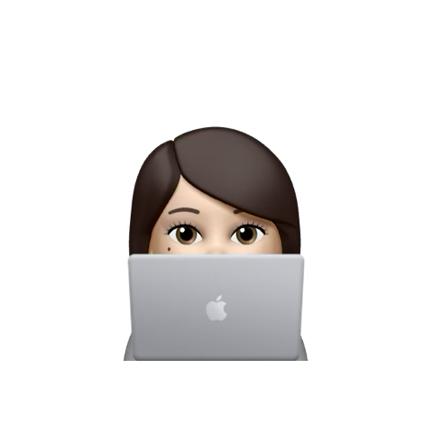
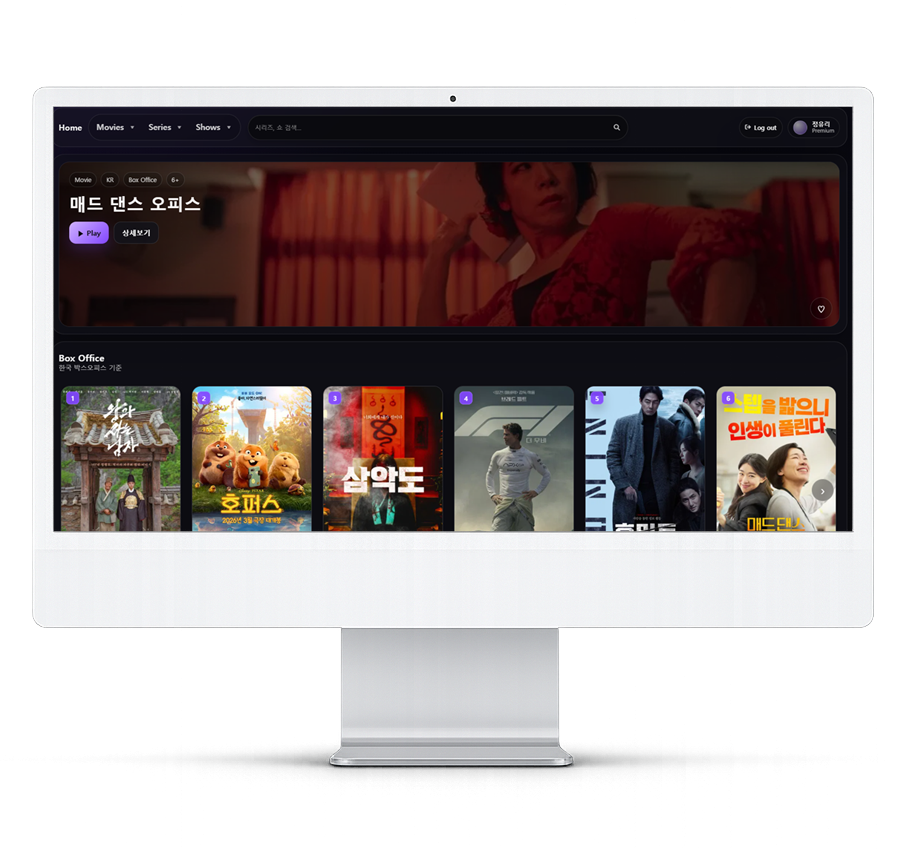
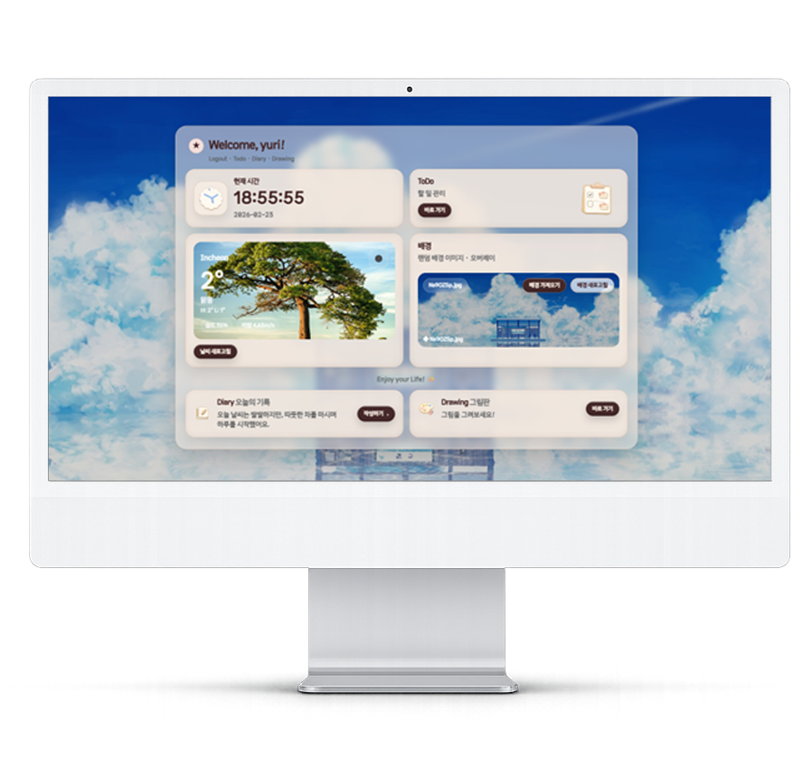
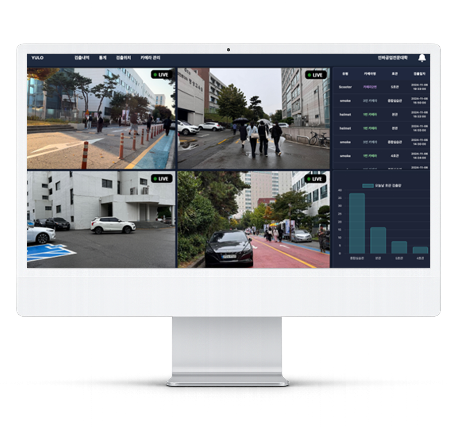
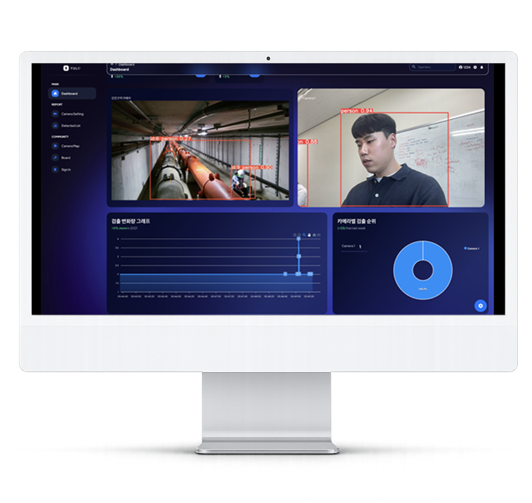

강점 01
문제를 구조화하는 설계
요구사항을 그대로 쌓는 게 아니라, 사용자가 이해하기 쉬운 흐름으로 정리합니다.
Frontend Developer · Web Publisher
HTML, CSS, JavaScript, React를 기반으로 사용자 인터페이스를 구현하고 실제 동작하는 웹 서비스를 개발합니다.

2022.02 - 2025.02
강점 01
요구사항을 그대로 쌓는 게 아니라, 사용자가 이해하기 쉬운 흐름으로 정리합니다.
강점 02
시안만 예쁜 결과물이 아니라 실제 구현과 유지보수까지 고려합니다.
강점 03
PC, 태블릿, 모바일 환경에서 일관되고 안정적인 화면 경험을 만듭니다.
Selected Work

영화와 시리즈 정보를 탐색하고 리뷰, 별점, 찜 기능을 사용할 수 있는 React 기반 웹 애플리케이션입니다. 탐색부터 상세 조회까지 이어지는 화면 흐름과 컴포넌트 구조를 중심으로 구현했습니다.

Drawing, Diary, Todo 기능을 한 흐름으로 연결한 멀티 페이지 웹 애플리케이션입니다. 부드러운 톤의 인터페이스와 페이지 간 자연스러운 이동, Canvas 기반 드로잉 기능 구현에 집중했습니다.

AI 기반 CCTV 데이터를 활용한 캠퍼스 안전 관리 시스템으로, 지도 API를 활용한 위험도 시각화와 실시간 모니터링 UI를 구현했습니다. 검출 데이터 그래프와 리스트를 통해 사용자 중심의 정보 전달 구조를 설계하여 직관적인 사용자 경험을 제공했습니다.

실시간 위험 감지와 검출 데이터 확인, 게시판 및 공지사항 기능을 한 서비스 안에서 사용할 수 있도록 구성한 플랫폼입니다. 대시보드, 감지 내역 조회, 페이지네이션, 화면 디자인 구현을 맡았습니다.
About Me
단순히 화면을 만드는 것이 아니라, 사용자가 정보를 빠르게 이해하고 효율적으로 사용할 수 있도록 UI 구조와 흐름을 설계하고 구현합니다.
퍼블리싱과 프론트엔드 개발을 기반으로, 데이터 시각화와 인터랙션을 통해 사용자 경험을 개선하는 데 집중합니다.
Core Skills
시맨틱 마크업 구조 설계 및 접근성을 고려한 구조화된 웹 페이지를 구성할 수 있습니다.
반응형 웹 구현 및 Flex/Grid 기반 레이아웃과 UI 스타일링을 적용할 수 있습니다.
이벤트 처리 및 DOM 조작을 통해 동적인 UI를 구현하고, API 연동 경험이 있습니다.
서버 데이터 바인딩을 활용하여 동적인 화면 구성 및 템플릿 기반 페이지를 구현했습니다.
컴포넌트 기반 UI 구성과 상태 관리를 적용한 페이지를 구현한 경험이 있습니다.
기본 컴포넌트를 활용하여 빠르게 레이아웃과 UI를 구성한 경험이 있습니다.
학습 내용과 작업 기록을 정리하는 용도로 활용하고 있습니다.
프로젝트 버전 관리 및 코드 이력을 관리하고 있습니다.